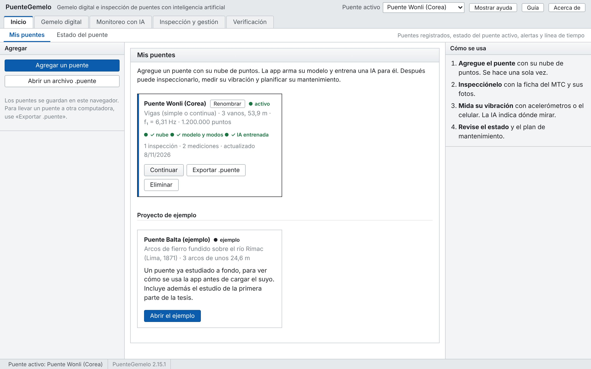
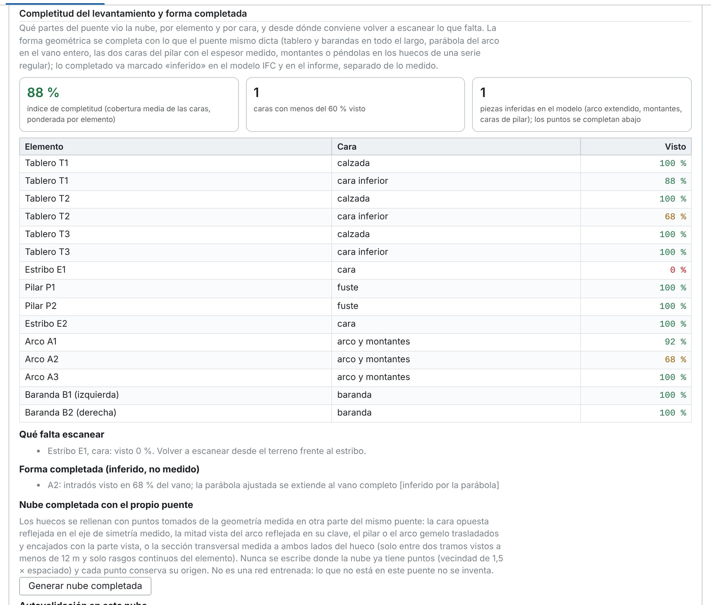
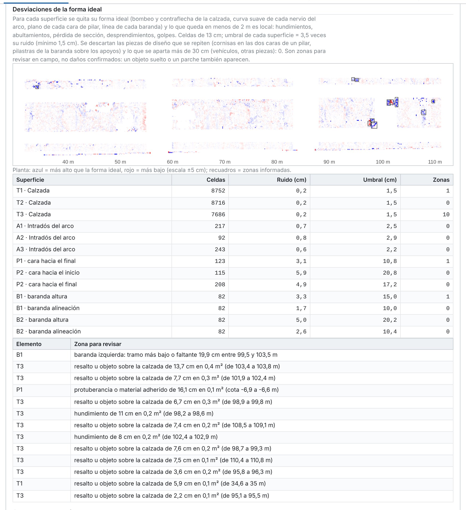
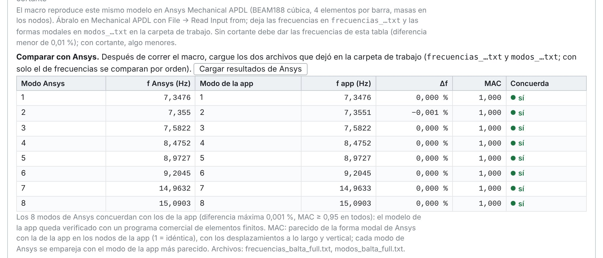
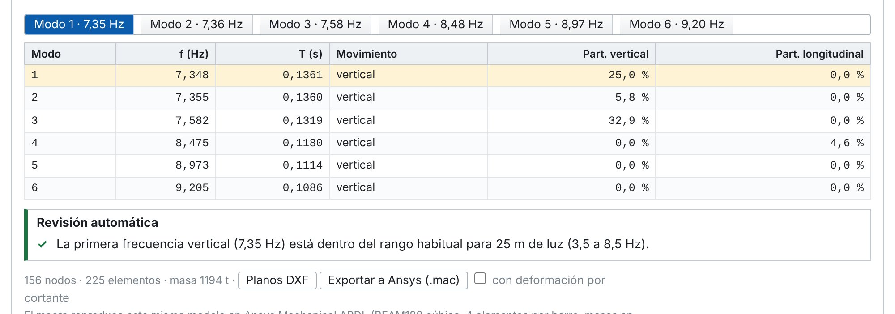
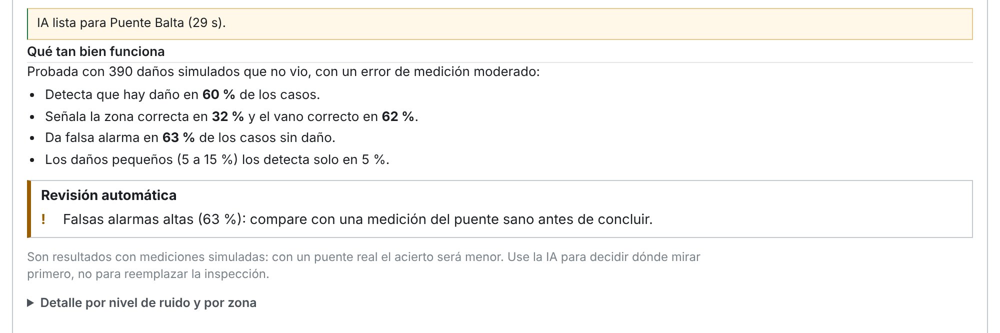
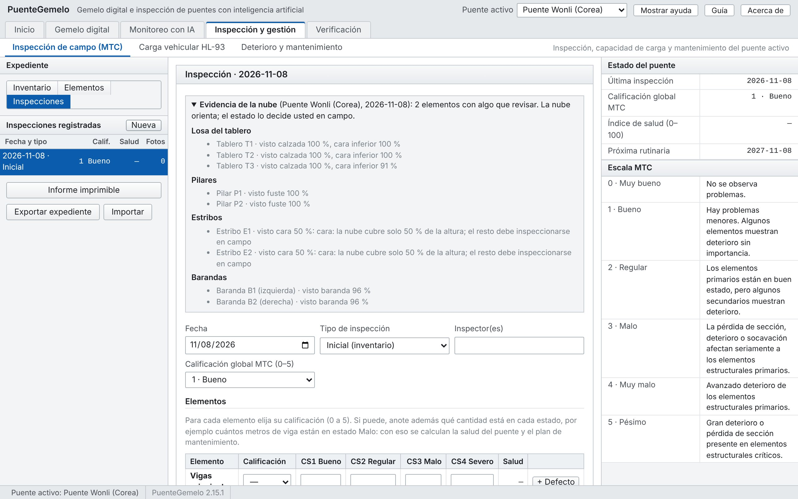
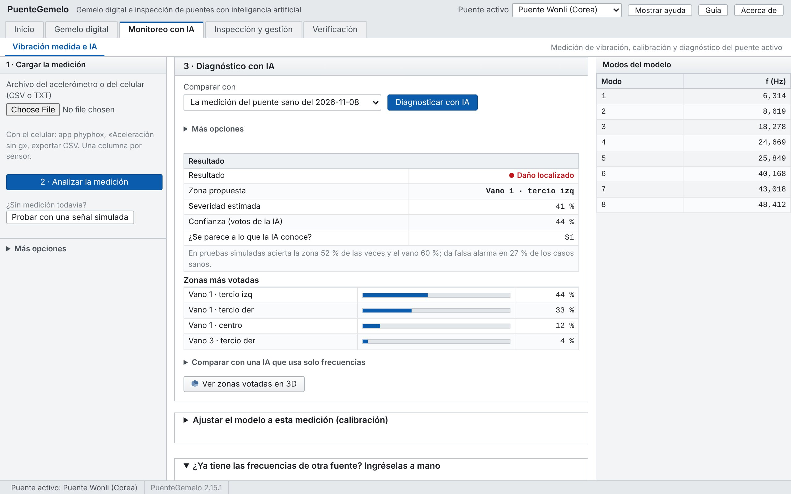

Cómo inspeccionar un puente histórico con PuenteGemelo, paso a paso.
PuenteGemelo guarda la ficha de inspección de cada puente (Guía del MTC), con sus fotos y su historia.
Con la nube de puntos del puente arma un modelo que sabe cómo debería vibrar ese puente. Así puede comparar ese modelo con la vibración que usted mide en campo. El modelo se puede verificar en Ansys con un macro que exporta la propia app.
Una inteligencia artificial, entrenada con ese modelo, le dice en qué zona conviene mirar primero. La IA no reemplaza la inspección: la orienta.
Tesis «Implementación de una plataforma digital para la inspección de puentes históricos con inteligencia artificial: caso Puente Balta». UPC, 2026. Luis Ñuñuvero Castillo y Anthony Tarazona Cerna. Código abierto (MIT).

El Puente Balta viene como ejemplo, para practicar sin cargar nada.
La mayor parte de lo que la app no puede medir se decide en campo, no en la computadora. Estas reglas salen de las pruebas con las nubes del Puente Balta y de otros puentes.
Necesita la nube de puntos del puente (escáner láser o dron), en PLY, LAS, XYZ o CSV. Si viene en E57 o LAZ, conviértala a PLY con CloudCompare. Pulse Agregar un puente y siga los 7 pasos de la izquierda.
| Paso | Qué hace usted |
|---|---|
| 1. Nube de puntos | Elija el archivo, revise que esté en metros y escriba el nombre del puente. |
| 2. Tablero y apoyos | La app marca el tablero y los apoyos. Revise que cada pilar real tenga su fila y que no haya árboles marcados como pilares (los dudosos dicen «Confirme»). Si falta uno, haga clic en la elevación. Debajo aparece lo que mide la nube, en cinco partes: 2.1 calidad de la nube, 2.2 medidas y elementos, 2.3 completitud y nube completada por elemento, 2.4 forma y cambios en el tiempo y 2.5 evidencia para la inspección. |
| 3. Geometría | Elija el tipo de puente (arcos, vigas o armadura) y pulse «Calcular geometría». |
| 4. Datos del puente | Elija el material y escriba los datos que la nube no muestra (secciones, peso del tablero). Las etiquetas amarillas indican valores que aún no revisó. Pulse «Calcular modos». Si quiere, exporte el modelo a Ansys y cargue después sus resultados para compararlos. |
| 5. Entrenar la IA | Pulse «Entrenar la IA». Tarda entre segundos y un minuto. Al terminar, la app dice cuánto acierta. |
| 6 y 7 | Opcionales: probar la IA con daños simulados y ver el informe con el orden de verificación en campo. |
En el paso 2, debajo de los apoyos, la app muestra lo que puede medir en la nube. Nada de esto reemplaza la visita: le dice qué vio y qué no.
| Panel | Para qué le sirve |
|---|---|
| Confianza de cada apoyo | La app vuelve a buscar los apoyos recorriendo la nube al revés (en espejo). Un apoyo que sale igual en los dos sentidos tiene confianza alta; si solo aparece en uno, media. Un pilar marcado inferido no tiene fuste en la nube: la app lo pone donde arrancan dos arcos seguidos. |
| 2.1 Calidad de la nube | Huecos sin puntos, extremos cortados, pilares o parte inferior poco vistos. Si la nube trae intensidad o color, separa la vegetación y busca zonas anómalas. |
| 2.2 Medidas y elementos | Ancho del tablero, canto, espesor y ancho de cada pilar. «Identificar elementos» separa tablero, pilares, estribos, arcos, péndolas, tirantes y barandas con sus medidas; «Descargar modelo IFC» entrega el modelo para Revit, Tekla, BlenderBIM u otro visor IFC. |
| 2.3 Completitud | Qué parte de cada elemento vio la nube, cara por cara, un índice global y, para cada cara vista en menos del 60 %, desde dónde volver a escanear. |
| 2.3 Nube completada | «Generar nube completada» rellena los huecos con la geometría medida en otra parte del mismo puente (la cara opuesta reflejada, la mitad vista del arco, el pilar gemelo, la sección del tablero a ambos lados del hueco). Antes se autovalida en su nube y solo usa las reglas que aciertan. Se descarga en PLY con lo generado en color y con su origen. |
| 2.3 Completado por elemento | Elija un elemento y vea su cara en un mapa de celdas: gris lo medido, en color lo generado (según la regla) y en blanco lo que sigue sin puntos. Para cada hueco dice con qué regla se completó y con qué acierto, o por qué no se pudo (por ejemplo, «no hay tramos vistos a ambos lados»). En tableros con losa también lista las manchas sin puntos en planta. Se descarga en CSV. |
| 2.4 Desviaciones y otra fecha | Dónde la calzada, el intradós de los arcos, las caras de los pilares o las barandas se apartan de su forma ideal (hundimientos, abultamientos, pérdida de sección, golpes). Son zonas para revisar: un objeto suelto o un parche también aparecen. Con otra nube del mismo puente puede ver qué cambió entre fechas. |
| 2.5 Evidencia para la inspección | Para cada elemento: cuánto lo vio la nube y lo que cae en él. Pulse Llevar al expediente de inspección (MTC): esa evidencia y las cantidades que mide la nube pasan a su ficha. |






La app distingue siempre tres cosas, y conviene que usted también:
Con la nube completada pasa lo mismo: cada punto generado dice de dónde salió, y antes de generar nada la app se pone a prueba en su propia nube (oculta parches, los completa y mide si acertó). Si una regla no llega al 80 % de acierto, o no se pudo probar con al menos 50 puntos, queda desactivada en ese puente aunque funcione en otros. Lo generado sirve para ver la forma completa, para el modelo y para planificar; no para medir un deterioro: lo que se mide es lo medido.
Con los datos del puente la app calcula los modos de vibración de un modelo de barras. Para comprobar que ese cálculo es correcto se puede repetir en Ansys Mechanical APDL:
frecuencias_…txt y modos_…txt en la carpeta de trabajo.Si los archivos son de otro macro (otro puente, otros apoyos o datos cambiados después de exportar), la app lo avisa en rojo y no da la comparación por buena. En ese caso exporte el macro otra vez desde el modelo actual.




Vaya a Inspección y gestión → Inspección de campo (MTC) y pulse Nueva.
La primera vez, llene también el Inventario (ficha del Anexo 03-01). Si llevó la evidencia de la nube, la longitud, los tramos, las luces y algunas cantidades ya vienen llenos (solo donde estaban vacíos) y arriba de la ficha aparece el recuadro Evidencia de la nube: úselo para saber qué mirar primero y qué parte no se vio. La calificación la pone usted.

¿Aún no tiene una medición? «Probar con una señal simulada» genera una para practicar.

| La app dice | Qué significa y qué hacer |
|---|---|
| Sin daño detectado | La vibración se parece a la del puente sano. Siga con la inspección rutinaria. |
| Daño localizado | La IA señala una zona con suficientes votos. Inspeccione esa zona primero, y con más detalle. |
| No concluyente | Ninguna zona reúne votos suficientes. Mire las zonas más votadas como orientación y repita la medición. |
| Medición distinta a lo esperado / Cambio no explicado | La medición no se parece a nada de lo que la IA conoce. Revise la medición (sensores, puntos, duración). Si está bien, algo cambió en el puente que el modelo no explica: conviene una inspección especial. |
En Inicio → Estado del puente verá:

¿Necesito internet?
El programa de escritorio funciona sin internet. La web necesita internet para abrirse y para la vista 3D. En los dos casos, los cálculos se hacen en su computadora y la nube no se sube a ningún servidor.
¿Puedo usarla con cualquier puente?
La app reconoce y mide puentes de vigas, losas y cajones, arcos con el tablero encima o debajo, armaduras, atirantados y puentes que combinan estos sistemas: geometría, elementos, modelo IFC y evidencia para la inspección. El modelo de vibración y la IA se arman para arcos con el tablero encima, vigas y armaduras; en atirantados y arcos con el tablero colgado representan solo el tablero sobre sus apoyos (el paso 3 lo avisa). Los colgantes, extradosados, móviles y las bóvedas de piedra rellenas no están soportados.
Mi nube trae calles, accesos o un puente con curvas. ¿Qué hago?
Recorte el puente: en el paso 1, en la vista de planta, haga clic en un extremo del tramo y luego en el otro, ajuste el ancho y pulse «Recortar». «Volver a la nube completa» deshace el recorte. Si el puente es curvo en planta, en el paso 2 puede activar «Seguir su eje» (opción experimental).
¿Cómo sé qué tipo de puente elegir?
En el paso 3 la app propone el tipo según la nube (arcos, vigas o armadura) y avisa si ve pilonos con tirantes o un arco sobre el tablero. Si el ajuste de arcos falla, casi siempre es porque el puente es de vigas.
¿Qué tan confiable es la IA?
Detecta mejor los daños grandes que los pequeños, y en puentes reales acierta menos que en las pruebas simuladas. Úsela para ordenar la inspección, no para reemplazarla.
¿Qué pasa si los datos del paso 4 no son exactos?
El modelo vibrará distinto del puente real y esa diferencia puede parecer daño. Por eso conviene guardar una medición del puente sano y comparar contra ella, o ajustar el modelo con «Ajustar el modelo a esta medición».
¿Necesito Ansys para usar la app?
No. La app calcula los modos por su cuenta. Ansys solo sirve para comprobar ese cálculo con un programa comercial: si los dos dan lo mismo, el modelo de la app está bien resuelto. Que el modelo represente bien al puente real depende de los datos del paso 4 y de una medición de vibración, no de Ansys.
¿Puedo fiarme de la nube completada?
Para la forma general, sí, en la medida que indica la autovalidación: la tabla dice, regla por regla, qué porcentaje acertó en su nube y cuáles quedaron desactivadas. En la nube del Balta, por ejemplo, la sección transversal repetida del tablero acertó el 99 % y la simetría de los pilares el 88 %; las otras reglas no tuvieron suficientes puntos para probarse y no se aplicaron. Para medir un daño, no: mida siempre sobre puntos medidos. Cuando el hueco es muy grande o no hay nada vecino que copiar, la app prefiere declarar el hueco a rellenarlo.
¿Por qué un pilar sale como «inferido»?
Porque su fuste no está en la nube (quedó tapado o la nube se cortó) pero dos arcos consecutivos arrancan ahí, y dos arcos seguidos se apoyan en algo. Confírmelo en campo. En un puente de vigas la app no puede hacer esta deducción: un pilar sin fuste en la nube no se detecta.
¿Qué hago con el archivo PLY de la nube completada?
Ábralo en CloudCompare o en cualquier visor de nubes y coloree por el campo origen: 0 es lo medido (gris) y cada número siguiente una regla distinta (el encabezado del archivo las lista). Así ve de un vistazo qué parte del puente es real y qué parte está completada.
¿Dónde quedan mis datos?
En la computadora o el navegador donde trabajó. Exporte el archivo .puente como respaldo cada cierto tiempo.
Herramienta de apoyo a la inspección. No reemplaza la evaluación de un ingeniero ni constituye una verificación de seguridad o de capacidad resistente.